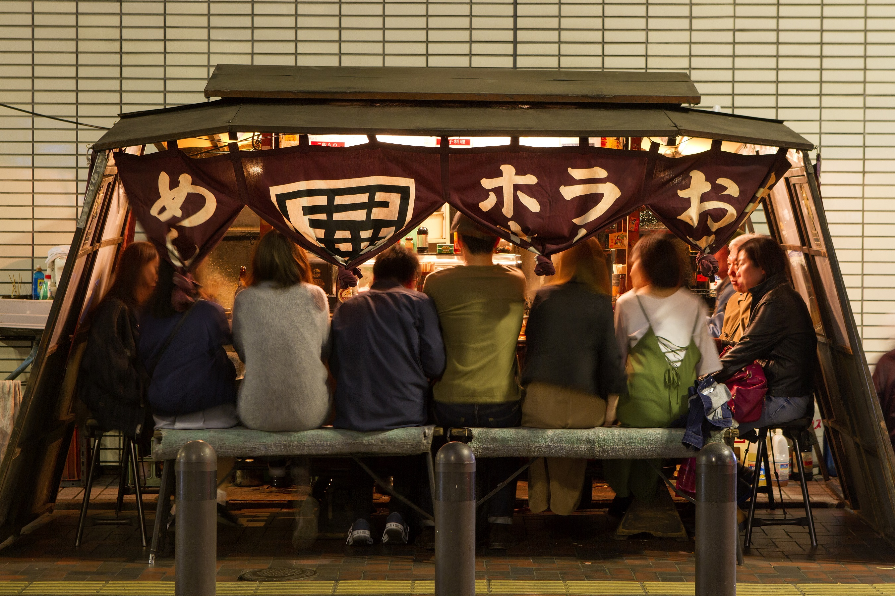

福岡観光案内
福岡グルメ
- 


日本最大の屋台街福岡。なんとその数は100軒を超えており、全国の屋台の40%を占めています。他のお客さんやお店の人との「距離が近い」ことが魅力です。そして、福岡といえば博多ラーメン！細麺に豚骨スープ、とてもおいしいですよね。替え玉というシステムも有名でしょうか。その一方で、福岡は、玄界灘、須防灘、有明海の3つの海に囲まれており非常に豊かな海産物を味わうこともできます。他にも福岡にはたくさん美味しいものがあるので、ぜひ探してみてくださいね！
お祭り
博多っこは祭り好きと言われ、それに恥じない数の祭りが福岡にはたくさんあります。ここでは、そのなかでも「博多祇園山笠」と「博多どんたく」の二つのお祭りについて説明します。まずは「博多祇園山笠」。7月1日から15日間にわたって行われる、鎌倉時代から続くとされるお祭りです。山笠は、昔は同じものだったそうですが、10〜メートルの奉納のための観賞用の飾り山笠、担いで博多の町を駆け抜けるための舁き山笠の2つに分けられ、そのどちらも必見です。次に「博多どんたく」。これは、ゴールデンウィークに行われる、国内外から約200万人が参加するという、日本最大級のお祭りです。どんたくパレードや、演舞台などで盛り上がります。
写真提供：福岡市